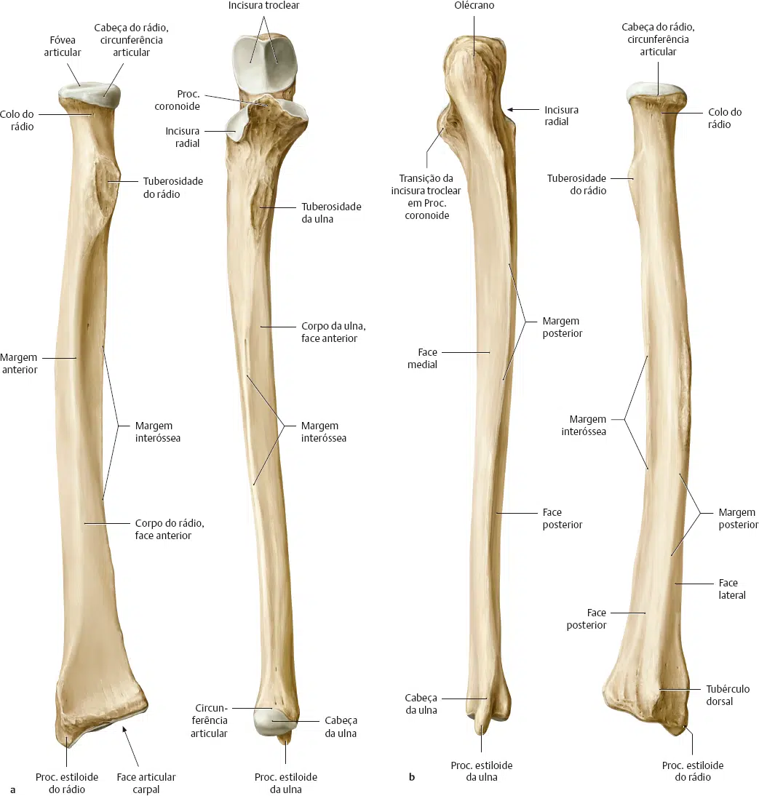

O antebraço é formado por dois ossos longos situados lado a lado, sendo o rádio lateral e a ulna medial.
Estão unidos pela membrana interóssea, estendida entre eles.
Ambos se articulam com o úmero, superiormente, embora a ulna seja preponderante na formação da articulação do cotovelo.
Entretanto, distalmente, somente o rádio participa da articulação com os ossos do carpo (articulação rádio-cárpica ou radiocarpal, dita “do punho“).
O rádio articula-se com a ulna e essa articulação permite os movimentos de supinação e pronação, nos quais a cabeça do rádio gira contra a face lateral da extremidade proximal da ulna e o corpo do rádio cruza o da ulna.
A possibilidade de pronação e supinação confere maior destreza e força à mão.
A extremidade proximal da ulna assemelha-se a uma “chave inglesa”, como mostra a figura na página anterior.
Seus acidentes podem ser melhor identificados examinando-se o osso pela sua face lateral.
Identifique, então, o olécrano e veja como ele é contínuo com o processo coronóide que se projeta para frente.
Estes dois acidentes formam a incisura troclear que se amolda à tróclea do úmero.
Observe em um esqueleto articulado que, na flexão do antebraço, o vértice agudo do processo coronóide aloja-se na fossa coronóidea do úmero.
Enquanto que na extensão do antebraço, o olécrano aloja-se na fossa do olécrano.
Identifique, inferiormente ao processo coronóide, a tuberosidade da ulna, destinada à fixação muscular, e, lateralmente ao processo coronóide, a incisura radial, na qual gira a cabeça do rádio na pronação e supinação.
Examine o corpo da ulna.
Identifique a borda interóssea, cortante, lateral, onde se prende a membrana interóssea e a borda anterior, arredondada.
Entre estas duas bordas situa-se a face anterior.
Na vista posterior da ulna: localize a borda posterior, aguda crista que se inicia no olécrano e percorre a diáfise do osso.
Medialmente à borda posterior situa-se a face medial e, entre a borda posterior e a interóssea, ambas agudas, encontra-se a face posterior.

a – Vista anterior; b – Vista posterior.
PROMETHEUS: Schünke, Michael. Coleção – Atlas de Anatomia 3 Volumes. 4 ed. Rio de Janeiro: Guanabara Koogan, 2019.
A extremidade proximal do rádio está constituída por um disco espesso, a cabeça do rádio, cuja face superior (fóvea da cabeça do rádio) é côncava para articular-se com o capítulo do úmero e cuja circunferência gira na incisura radial da ulna na pronação e supinação.
Observe que a circunferência da cabeça do rádio é mais estreita inferior do que superiormente, o que confere estabilidade à articulação.
Abaixo da cabeça do rádio, apresenta-se uma porção estreitada, o colo do rádio, e abaixo deste, no lado medial, observa-se a presença de uma projeção denominada tuberosidade do rádio, destinada à fixação de músculo.
O rádio apresenta nítida convexidade lateral que lhe facilita cruzar a ulna na pronação.
A borda lateral, como foi dito, é convexa, e a borda medial, cortante, serve à fixação da membrana interóssea, sendo por isto denominada borda interóssea.
A face anterior situa-se entre a borda interóssea e a borda anterior, sendo ligeiramente côncava, enquanto que a face lateral fica entre a borda anterior e a lateral.
A extremidade distal do rádio é uma expansão de todas as faces do seu corpo que terminam circundando uma área articular côncava, inferior, destinada a articular-se com ossos do carpo.
O processo estilóide do rádio é facilmente identificado na face lateral da extremidade distal, enquanto na face medial nota-se a presença da incisura ulnar que recebe a cabeça da ulna.
Anatomia de superfície — A ulna pode ser palpada, posteriormente, em toda a sua extensão e seu processo estilóide faz relevo na superfície ao nível do punho, posteriormente.
Durante a pronação e supinação, a cabeça do rádio pode ser sentida pela palpação, distalmente ao epicôndilo lateral.
O processo estilóide do rádio é palpável ao nível do punho, lateralmente.
Repare que ele se situa distalmente ao relevo produzido pelo processo estilóide da ulna.
a – Vista anterior; b – Vista posterior.
PROMETHEUS: Schünke, Michael. Coleção – Atlas de Anatomia 3 Volumes. 4 ed. Rio de Janeiro: Guanabara Koogan, 2019.